新闻学专业，三段主流媒体实习 + 校园舆情/传播研究经历，擅长全媒体文案、短视频策划剪辑与新媒体账号运营。
河南开封科技传媒学院传播学院新闻学本科（2023 级），中共党员。在校从班长做起，历任学院团总支组织部委员、部长，现任团总支副书记；曾任招生就业处助理团成员、大学生艺术团合唱团委员、大禹舆情研究院学生助理。实习覆盖主流媒体与传播研究：顶端新闻采写编辑（2025.06 至今）、河南日报社新闻评论理论中心（2025.12 至今）、国际 ESG 传播研究院内容研究。熟悉 Premiere / Photoshop / AI 内容生产工具，有从 0 到 1 的账号运营与省级获奖内容创作经验，抖音账号运营累计 1 万+ 粉丝、全网播放超 100 万。
从品牌整合营销到短视频策划，覆盖内容生产全链路。
围绕开封宋都御街文旅遇冷现象制作的 news 短视频分镜脚本，共 6 段、约 2 分 30 秒。
以 AI 辅助创作的文旅宣传短片，获河南省 "AI 新时代 新质向未来" AI+影视作品推优活动三等奖（颁发单位：河南省文学艺术界联合会 / 河南省广播电视局 / 河南省科学技术协会，2025.12）。负责选题策划、脚本与剪辑，探索传统文化的新媒体表达路径。
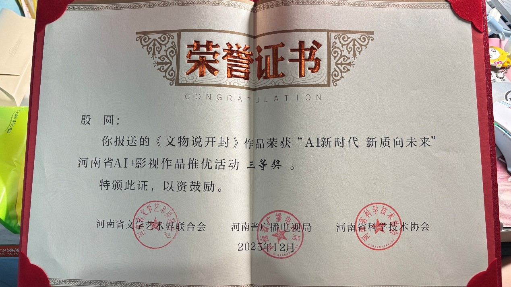
获奖证书 · 河南省 AI+影视作品推优活动（2025.12）
作品《穿越千年学养生》荣获河南省医学科普学会第四届 5·12 护理科普短视频征集活动"优秀奖"。结合新闻传播视角做医学科普短视频创作。
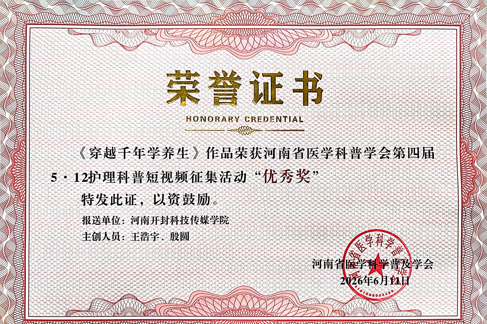
获奖证书 · 河南省医学科普学会 2026.06.11
2024 年 5 月 31 日，在大禹舆情研究院学生助理期间，作为课题组学生成员之一参与中央政法委在河南调研期间举行的"全省政法系统同训互查对抗演练活动"，在期末考试与小学期准备任务繁重的情况下，安排时间认真学习演练规则及经典案例，为市委政法委提供舆情引导评论、视频和图片参考；市委政法委于 2024.06.20 致信表扬，附件为表扬名单。
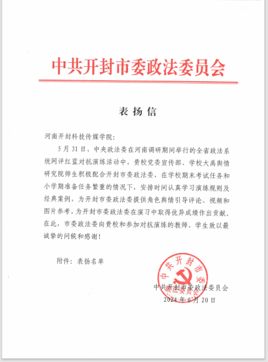
表扬信原件 · 中共开封市委政法委员会 2024.06.20
从 0 搭建并运营学院官方抖音账号，积累 1 万+ 粉丝，负责内容选题、 拍摄剪辑与日常更新，多篇内容进入校园传播热点。
参与省级高校防艾基金项目，负责宣传内容策划与传播，项目结项获评优秀， 内容覆盖 1000+ 名在校师生。
主流媒体与传播研究机构的内容生产实战。
参与评论稿件采编，累计完成 3 篇署名评论，锻炼时政与深度内容写作能力。
参与顶端新闻文旅报道（如宋都御街专题），完成 30+ 篇稿件、100+ 条视频剪辑， 相关作品全网播放超百万。
撰写 10+ 篇 ESG 主题稿件，梳理 30+ 家企业案例，负责可持续传播内容策划。
参与舆情监测与内容整理，协助研究院日常研究与传播事务。2024.05.31 参加"全省政法系统同训互查对抗演练活动"，在期末与小学期任务繁重情况下配合提供舆情引导评论、视频和图片参考，获中共开封市委政法委员会致信表扬（2024.06.20）。
校级与省级认可的学业、工作与创作成果。
2024.05.31 全省政法系统同训互查对抗演练活动（中央政法委河南调研期间），为市委政法委提供舆情引导评论、视频和图片参考，2024.06.20 致信表扬。
2023–2024 学年（编号 2024171744，河南省教育厅，2024.11），学业与综合表现突出。
作品《穿越千年学养生》（主创：王浩宇、殷圆；报送：河南开封科技传媒学院；颁发：河南省医学科普学会，2026.06.11）。
作品《文物说开封》（河南省文联 / 省广电局 / 省科协，2025.12）。
《沿黄护生·黄河生态农业协同发展路径探索》项目（共青团河南开封科技传媒学院委员会，2024.06）。
连续两学年获评，专业成绩与综合表现突出。
连续两学年获评，综合成绩班级第 1；任期覆盖班长、团总支组织部、副书记。
共青团河南开封科技传媒学院委员会 2024.05 颁发。
2024–2025 学年舆论宣传工作优秀网评员（校党委宣传部，2025.08）；2024 年招生咨询优秀招生助理（校招生办，2024.09）。
部分获奖与资质证书（公开展示，如需下架可随时告知）。
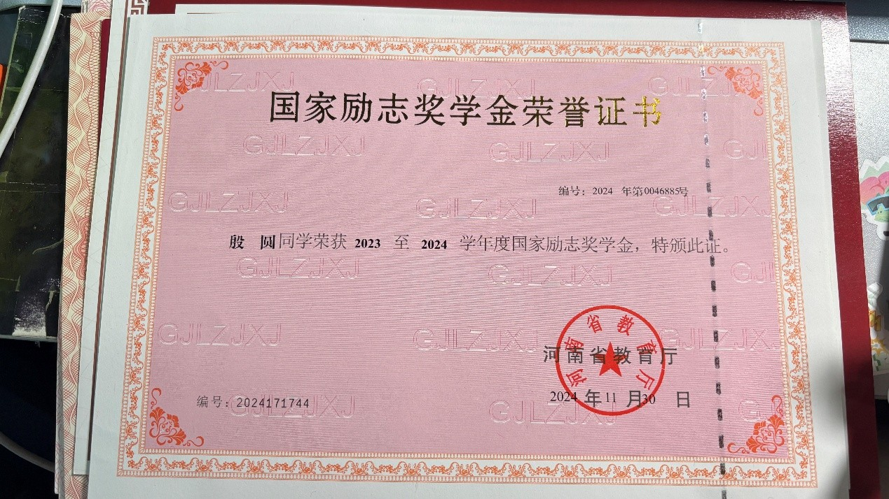
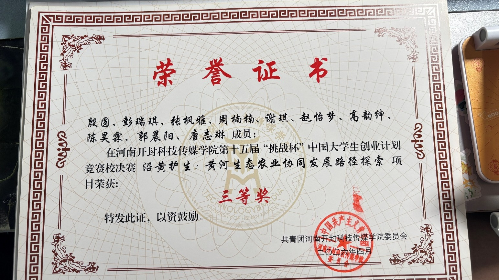
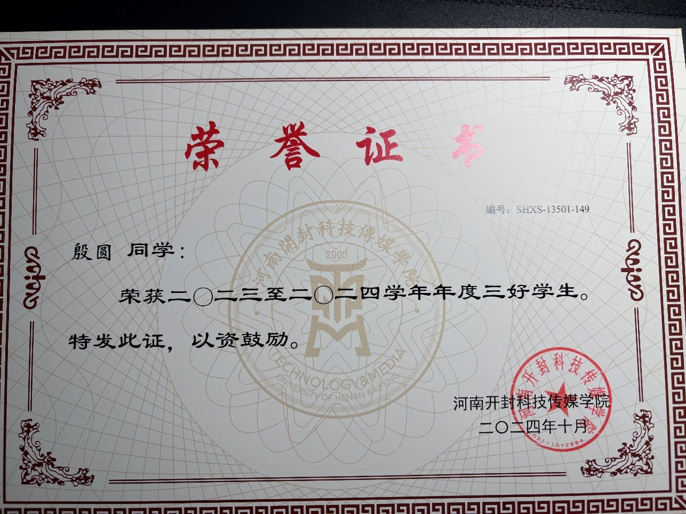
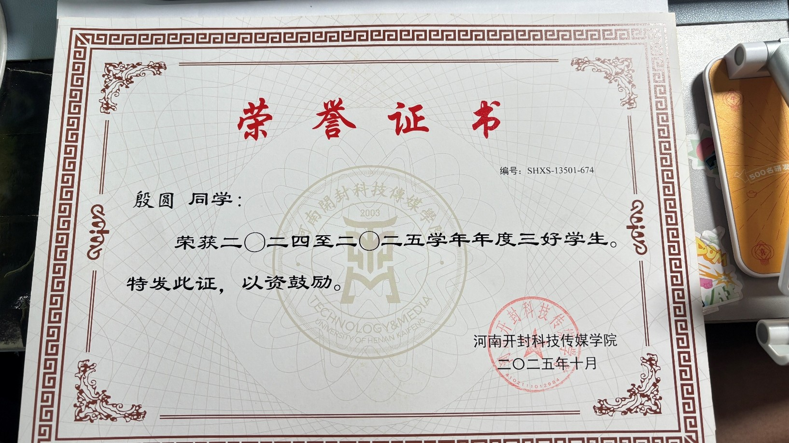
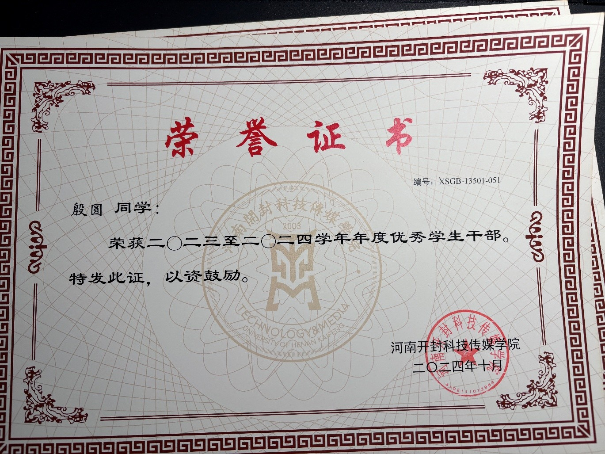
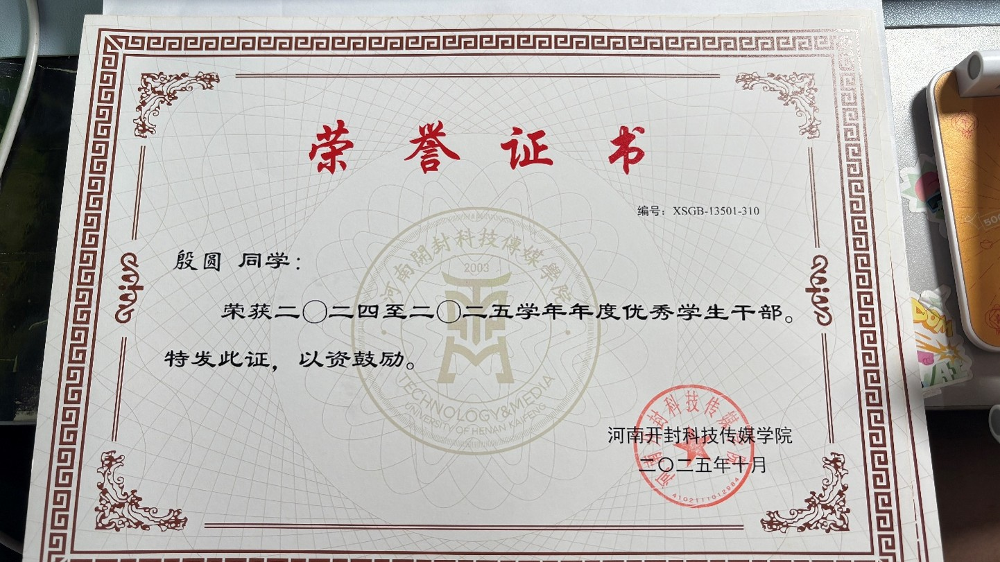
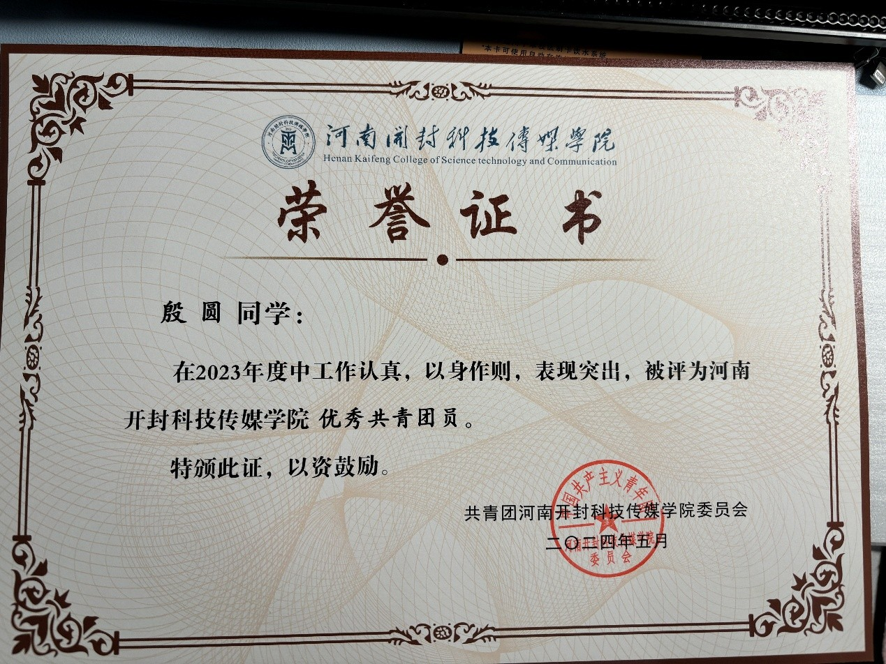
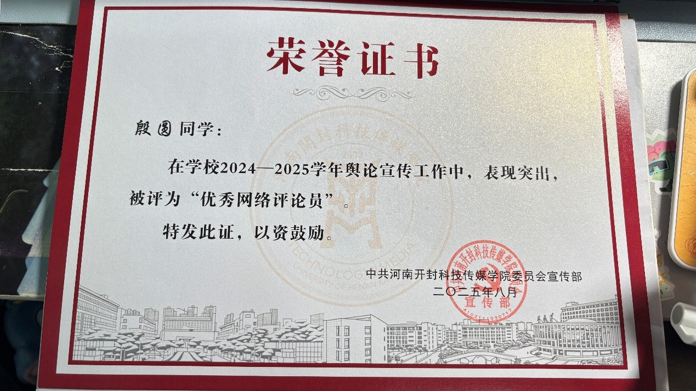
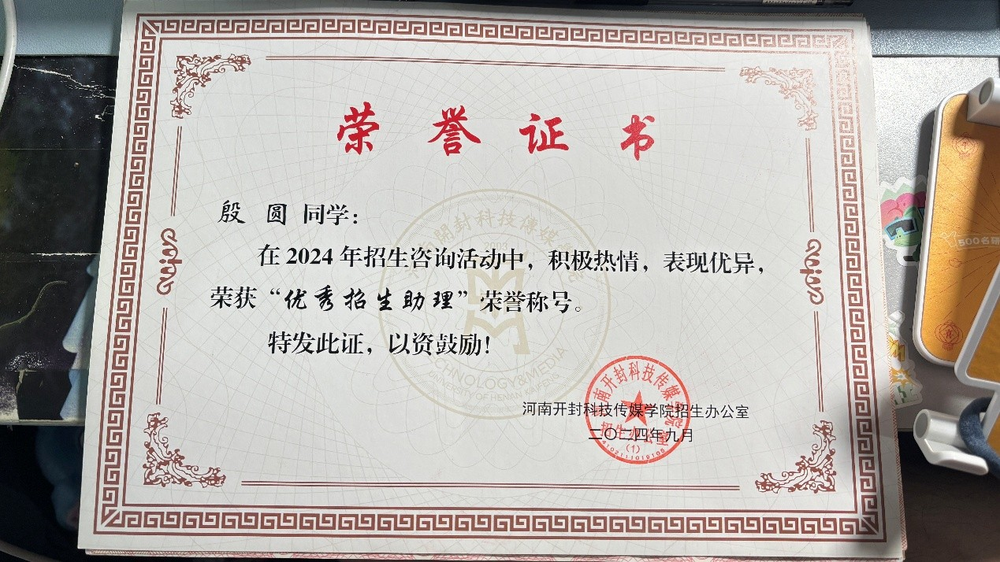
完整简历与更多作品请见上方「作品集」网盘链接。